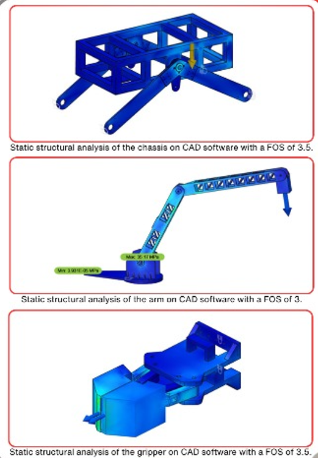
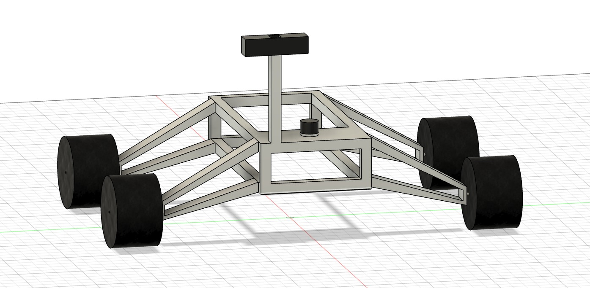
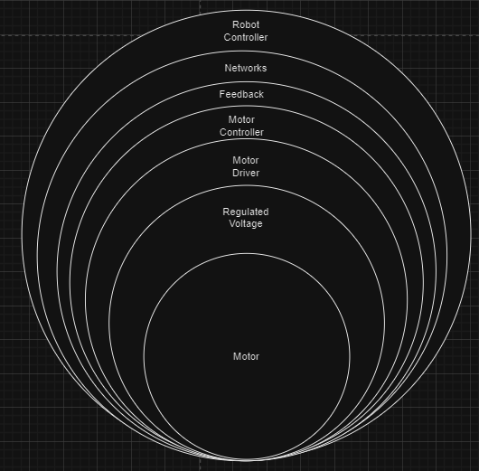
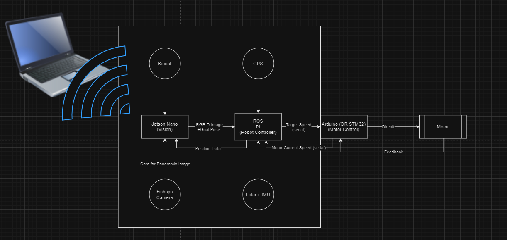
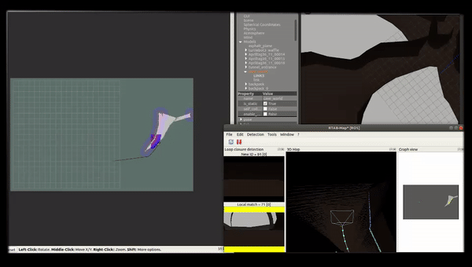
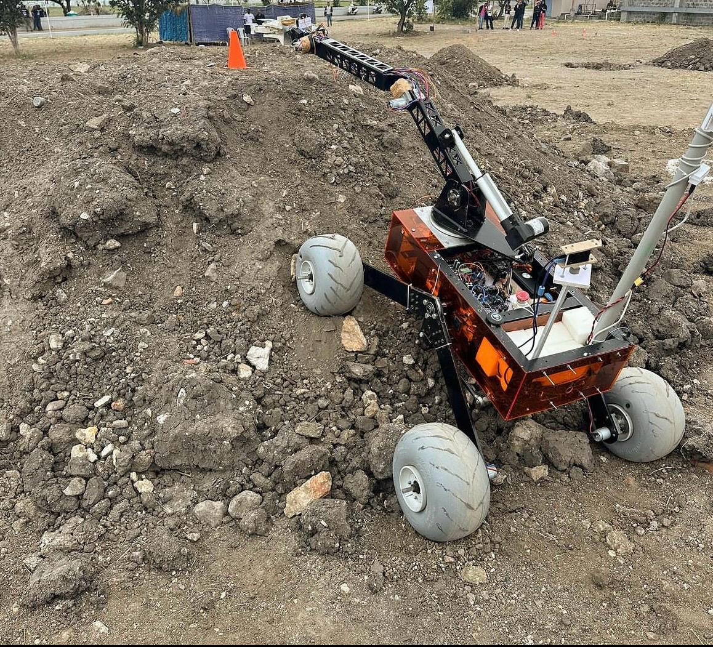

Kosmos - Autonomous Mars Rover
Mentored by Dr. Venkatesh Deshmukh
Project Overview & My Role
The "Kosmos" project represents a ground-up endeavor to create an autonomous rover capable of navigating and performing tasks in challenging, Mars-like environments. As the founder of Team Kosmos, I spearheaded this initiative from its initial concept, driven by a passion for mobile manipulation and robotics.
My role was deeply embedded in the entire design and development lifecycle. I architected the rover's core systems and collaborated closely with all technical sub-teams, ensuring a cohesive and integrated approach. This included leading the mechanical design, where I was instrumental in iterating and integrating the robust rocker-bogie suspension system, a critical element for the rover's all-terrain capabilities. I also laid out the foundational electrical system architecture, defining how power and data would flow, while teammates focused on detailed PCB and battery pack design.
A significant personal contribution was the complete design and implementation of the rover's advanced navigation stack. Leveraging ROS, Lidar, and camera data, I developed the software that enabled the rover to perform RTAB mapping for 3D environment understanding and autonomous traversal, bringing a high degree of intelligence and self-sufficiency to the platform. This project showcases a journey from an ambitious idea to a functional, award-winning autonomous system.
🎯 Our Mission: Engineering Autonomy for Discovery
The goal was ambitious: develop a lightweight, aluminum-chassis Mars rover capable of conquering challenging extraterrestrial terrains—from sand dunes to rocky ledges. This project was born from a passion for mobile manipulation and evolved into a sophisticated autonomous system. Our vision was to empower scientists by handling the complexities of navigation and exploration, allowing them to focus on discovery, not the driving.
🛠️ The Design and Development Odyssey
Building a rover capable of Mars-like exploration from the ground up is a significant undertaking. Our process emphasized iterative design, rigorous testing, and leveraging cutting-edge robotics technologies. This portfolio section primarily details the crucial initial design and development stages.
- Conceptualization & Mechanical Design:
The journey began with defining the core requirements: a lightweight yet robust platform. We opted for a hollow aluminum chassis with an acrylic cover. Key design goals were minimizing weight while maximizing structural strength. Finite Element Analysis (FEA) using ANSYS was instrumental in optimizing the chassis design to withstand anticipated loads. Early designs featured a quad suspension system, which was later iterated to a more robust rocker-bogie system to enhance terrain adaptability.

 - Decentralized Electrical Architecture:
We designed separate systems for arm control and drive control, with future plans for integration. The vision processing was handled by a Jetson Nano, while a Raspberry Pi managed motion planning. This decentralized approach ensured the rover could be safely operated even if higher-level systems encountered issues. Low-level motor control with PID loops was implemented on an Arduino microcontroller, with communication between boards via I2C and WiFi.

 - Procurement & Precision Manufacturing:
Components were carefully selected and sourced. Manufacturing involved precision-machined parts for the chassis and a rapid-printed gripper for the manipulator arm. - Assembly, Integration & Testing:
Modular wiring harnesses simplified assembly. Each subsystem, including motor controllers and sensors, underwent thorough bench-testing before integration. - Advanced Autonomous Navigation:
The rover's brain relies on the ROS 1 (Robot Operating System) navigation stack. For environmental perception, we initially experimented with a Kinect v1, but encountered issues with IR glare in outdoor conditions. We then successfully integrated a 2D Orbbec Lidar and a Kinect v2. This setup enabled us to implement RTAB-Map (Real-Time Appearance-Based Mapping) for creating dense 3D point cloud maps of unknown environments and navigating known areas. The navigation stack utilized the DWA (Dynamic Window Approach) planner for path planning and AMCL (Adaptive Monte Carlo Localization) for localization within the generated map. A custom ROS node was developed to apply an Extended Kalman Filter (EKF) to fuse GPS and IMU data for improved position estimation and belief updating. The rover also supported teleoperation from a base station for manual control when needed.
 - Rigorous Field Trials & Iteration:
The rover was subjected to demanding field trials, including simulated Martian slopes and endurance runs in sand-pits, to validate its performance and identify areas for improvement.

🔍 Core Capabilities of the Final Rover
1. Precision Instrument Maintenance
Traverse to instrument panels and perform delicate operations with sub‑centimeter accuracy using its 6-foot, 5-DoF manipulator arm.
2. Fully Autonomous Expedition with Advanced Sensing
Navigate between waypoints autonomously using a sophisticated sensor suite including a 2D Orbbec Lidar and a Kinect v2. It employs RTAB mapping for real‑time 3D environment modeling and the ROS 1 navigation stack for robust path planning and obstacle avoidance—zero human input required during autonomous missions.
3. Reconnaissance & Payload Delivery
Scout new areas, identify, and pick up samples using its ABS 3D-printed gripper (6 kg payload capacity), and deliver them to designated analysis modules or return locations.
4. On‑Board Environmental Analysis
Collect basic environmental data using an integrated soil sensor that tests for humidity and other parameters, providing valuable in-situ scientific measurements.
⚙️ Final Rover: Key Specs at a Glance
- Weight: 45 kg
- Dimensions: 920 × 940 × 500 mm
- Chassis: Aircraft‑grade aluminum, optimized with FEA (FOS ≥ 3.5)
- Power: Li‑Po battery pack powering 12 V, 6 V & 5 V subsystems
- Comms: Radio + WiFi, 1 km+ line‑of‑sight range
- Vision & Perception: 3 cameras (wide, stereo, arm‑mounted) for 360° awareness, complemented by a 2D Orbbec Lidar and Kinect v2 for RTAB mapping and navigation.
- Manipulator: ABS 3D‑printed gripper on a 6‑foot arm—5 DoF, 6 kg payload
- Navigation: ROS 1 Navigation Stack, RTAB-Map (Simultaneous Localization and Mapping), DWA planner, AMCL localization, EKF for GPS/IMU fusion.
🏆 Results & Milestones (Culminating in the Final System)
The development journey, incorporating the design methodologies and technologies described, led to a highly capable rover platform. The final system, as represented by our work leading up to the state shown in the competition poster, achieved significant milestones:
- 98% ML‑model accuracy in obstacle classification
- Effortless traversal over inclines up to 30° and soft sand
- “Emerging Team of the Year” at International Rover Challenge ’24
- Top‑10 overall finish & 4th in Astrobiology Testing